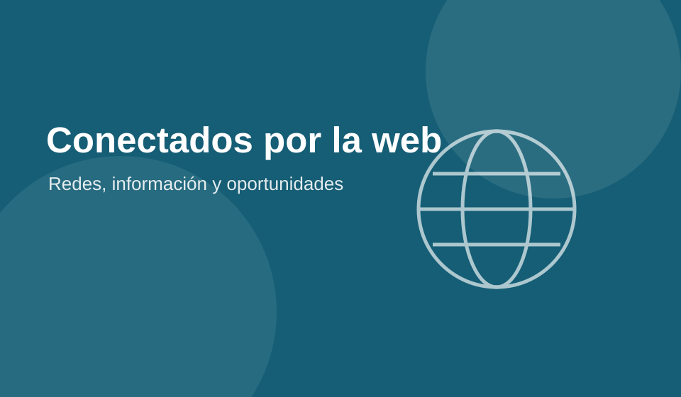
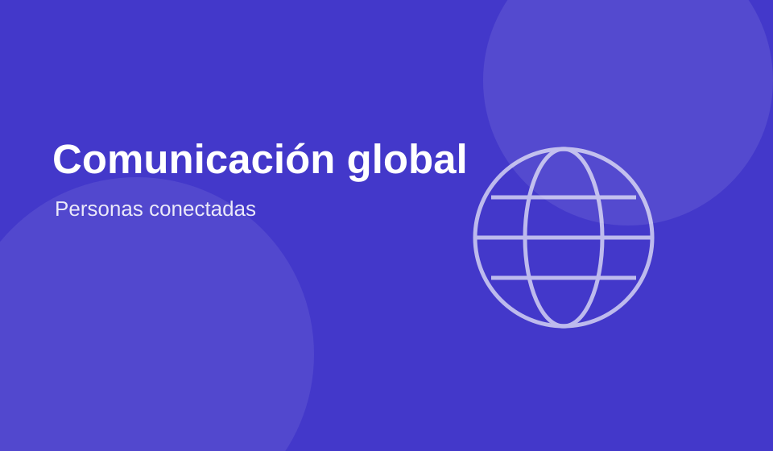

01 / SOCIEDAD
Aprender y participar
Educación en línea, comunicación inmediata y acceso a servicios desde distintos lugares.
Conocer el impacto socialProyecto académico · HTML5
Explora cómo las tecnologías web han cambiado la forma de aprender, comunicarnos, trabajar y crear oportunidades empresariales.
Proyecto informativo desarrollado con HTML5, contenido semántico y navegación entre páginas.

Las tecnologías web tienen efectos en las personas, en las organizaciones y en los servicios que utilizamos cada día.
Educación en línea, comunicación inmediata y acceso a servicios desde distintos lugares.
Conocer el impacto socialVenta en línea, promoción digital y nuevas formas de atender a los clientes.
Conocer el impacto empresarial
La conectividad aporta beneficios, pero también exige privacidad, seguridad y pensamiento crítico.
Ir al formularioSon los lenguajes, estándares, protocolos y herramientas que permiten crear, presentar, compartir y consultar contenidos o servicios en la World Wide Web.
En este proyecto, HTML5 organiza la información mediante etiquetas semánticas y CSS3 define su apariencia visual. Los enlaces permiten desplazarse entre páginas usando rutas relativas.
Este video educativo original sintetiza tres ideas centrales: conexiones sociales, nuevas posibilidades para las empresas y uso responsable de la tecnología.
El video se incluye como archivo MP4 local y puede reproducirse sin conexión a Internet.